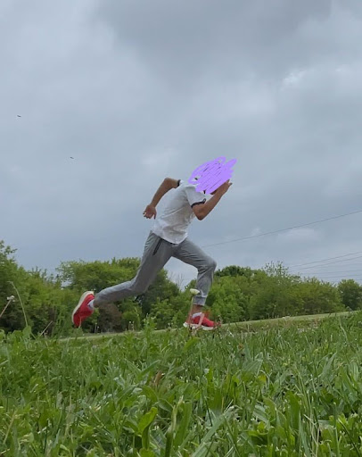
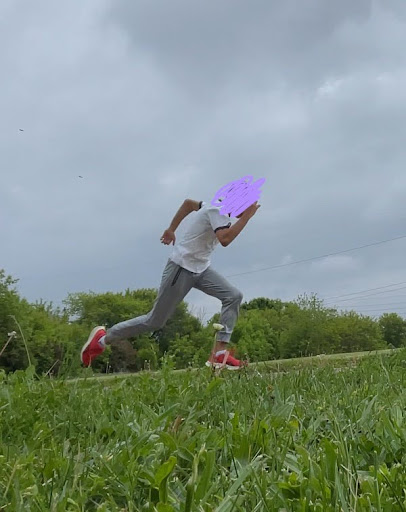

SPRINT MECHANICS,
EXPLAINED
A progression to reach your MAX potential.
Have you ever been stuck in training? Going consistently, putting in the work? Even if you're not, you're still disappointed because you're not getting the results you want? Don't worry, we've all been there. Whether you're a beginner or a more experienced athlete looking to improve their speed, I guarantee that you will learn something from this project that you can easily apply to your training. By providing a clear, structured progression and teaching simplified biomechanics concepts (while keeping them accurate), this will maximize your speed potential. Expect this to be a little bit different from your traditional “this one thing is killing your speed” videos you stumble upon. Ready to SHATTER your personal best?
Start the Progression →ABOUT ME
My name is Jacob, I am 15 years old and I spent the majority of my middle school and grade 9 years learning about different sprinting techniques and training methods from different videos and articles. I have had a deep passion for both learning and training to become faster ever since I was a kid, so I have decided to use this passion in order to create this website to teach you, the athlete, how to get faster, clearly, effectively, and without any annoying distractions getting in your way.
 
